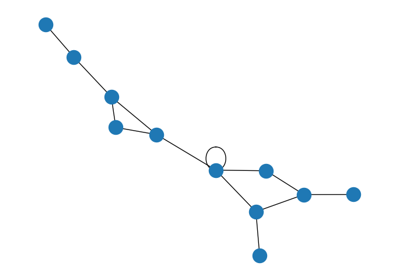
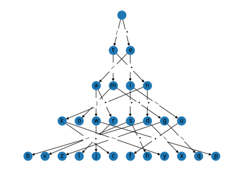
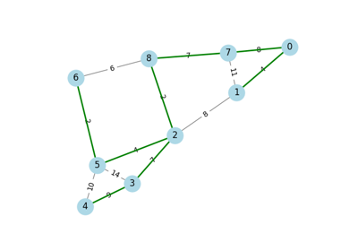
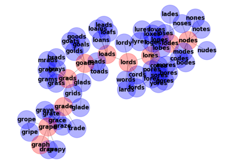

Graph# DAG - Topological Layout DAG - Topological Layout  Degree Sequence Degree Sequence Erdos Renyi Erdos Renyi Expected Degree Sequence Expected Degree Sequence Football Football Karate Club Karate Club  Morse Trie Morse Trie  Minimum Spanning Tree Minimum Spanning Tree Napoleon Russian Campaign Napoleon Russian Campaign Roget Roget Triads Triads Visibility Graph Visibility Graph  Words/Ladder Graph Words/Ladder Graph